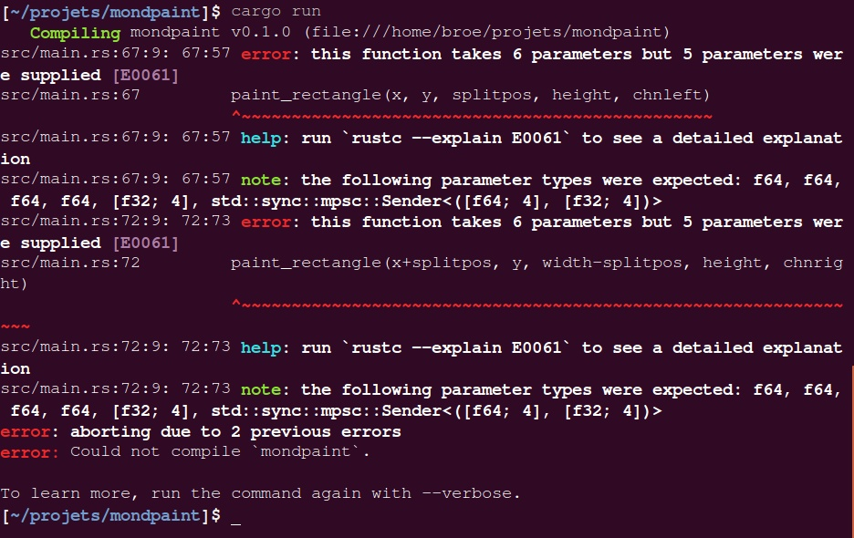

Introduction
This is a collection of tutorials and workshop material, along with code.
Installfest
This tutorial will walk you through the steps of building and running Rust
RustBridge InstallFest: User Guide
Introduction
Welcome! This tutorial walks you through the process of installing Rust on your computer and setting up a text editor to start programming with Rust. You don't need to have any programming experience to use this tutorial. However, an understanding of basic operations of your computer, such as downloading an app, is assumed. The entire process should take you less than 30 minutes.
Before you begin, make sure you have a computer with:
- Access to the Internet
- An operating system that supports Rust, including macOS, Linux, or Windows.
Let's get started!
Using the Terminal
A terminal is a text-based way of interacting with your computer without a graphical interface. We're using a terminal because it's the standard method of installing and working with programming tools. Your computer already has a terminal tool installed by default. Review the instructions for the operating system of your choice.
macOS
-
Open Terminal by either selecting the Spotlight menu (magnifying glass in the upper right) or by pressing the command and space keys together, then typing "Terminal".)
When you first open Terminal, you'll see a prompt. You type commands to the computer after the prompt.
It'll look something like this:
Last login: Some Date on console Janes-MacBookPro:~ jane$
Windows
On windows the terminal is called a command prompt. You can access it by opening
the start menu and typing cmd.exe or command prompt. Windows should find it
for you.
After starting the command prompt, you can see a black screen saying something like this:
C:\Users\yourname>
Try typing commands like dir.
Well done!
Linux
-
Ensure
curlis installed.which curlInstallation is successful if you see any output. It will look something like this:
/usr/bin/curlCurl is used to download files from the Internet. We need to make sure it's installed on your computer before attempting to download Rust files.
If there is no output (the prompt simply appears again), or you get a message saying something like "curl not found" you must install curl. Use your system's package manager to install it.
On a Debian-based system like Ubuntu, this would be:
apt-get install curl
Installing Rust
The next step after opening the terminal is installing rustup, which installs Rust and Cargo, which is a package management (installing software written in Rust) and build tool (converting code into a usable program).
macOS
-
In your web browser, navigate to rustup.rs.
-
To download and run a program that installs the correct version of rustup for your computer, copy and paste the text on the webpage into your terminal. It should look something like this:
Janes-MacBookPro:~ curl https://sh.rustup.rs -sSf | sh -
Press return.
The output describes how Rust and Cargo will be installed on your computer.
-
After you've read through the output, press return to accept the default installation settings. It may take up to a couple minutes to install. Once it's done installing, you'll see an installation is complete message.
-
Follow the instructions to configure the terminal. Copy and paste the text. It'll look something like this:
Janes-MacBookPro:~ source $HOME/.cargo/envThere won't be any output or confirmation. You'll just see the prompt again.
-
To confirm that cargo installed correctly, type
cargoat the prompt and press return. If it installed correctly, you'll see an output with help content.
Windows
-
Go to the Rust website.
-
Click on Install to download the Rust installer.
-
Open the file
rust-1.11.0-i686-pc-windows-gnu.msi(or similar) you just downloaded.s -
Now the installation dialog starts. Confirm any warnings and stick to the default options when prompted.
Now you should have Rust installed on your machine.
To verify that, open a new command prompt like above. Don't use one that has already been open, because it does not know about Rust yet.
Type in the command rustc --version. The Rust compiler will tell you its
current version:
C:\Users\yourname>rustc --version
rustc 1.11.0 (9b21dcd6a 2016-08-15)
C:\Users\yourname>
Now you are ready to go!
You can create a new Rust project using cargo, Rust's package manager, like
this:
C:\Users\yourname>cargo new my-rust-project --bin
C:\Users\yourname>cd my-rust-project
C:\Users\yourname\my-rust-project>cargo run
Compiling my-rust-project v0.1.0 (file:///C:/Users/yourname/my-rust-project)
Running `target\debug\my-rust-project.exe`
Hello, world!
C:\Users\yourname\my-rust-project>
Well done! You just compiled and executed your first Rust program.
Setting up a text editor
A text editor (also commonly just called an editor) is a program used to edit text files. Examples of common editors used to program are Atom, Sublime Text, Microsoft Visual Studio Code, Vim, and Emacs.
Word processors, like Microsoft Word, aren't the same as text editors and aren't designed for editing source code.
If you already installed and use a text editor, skip to the "Installing the Rust package for your editor" section. If you don't have a text editor or are not sure if you have one, we recommend installing Atom. The next section walks you through the installation.
Installing Atom
MacOSX
-
In your web browser, navigate to Atom website.
-
Click the Download button to download a zip file.
-
Browse to the zip file in your Downloads directory or click the file the your browser's download bar.
-
Extract the zip file by double clicking the .zip file.
-
Move the Atom.app file to your Applications directory. You can drag and drop the file.
-
In the Applications directory, open the Atom app by double clicking.
If you get a security message about opening an application downloaded from the Internet, it's okay to proceed. Click Open.
When Atom opens, you'll see a Welcome and Welcome Guide pages as tabs.
Windows
In your web browser, navigate to the Atom website. Hit
Download Windows Installer to download AtomSetup.exe. Open it to install
Atom.
Follow the installation dialog. At the end, Atom should start. You can always access it using the start menu.
Installing the Rust package for your text editor
The final step is installing a Rust language package for a text editor. The package makes it easier to code with Rust with features like colored text and auto-formatting.
-
In Atom, navigate to Preferences, then Install. (On Windows, you can find this under File, then Settings; or hit Ctrl+,)
-
Search for "rust".
-
Select the "language-rust" package by the user "zargony". Click Install.
Wait for the package to download and install.
-
Still in Atom, click on the Packages tab. Under the Community Packages section, verify that "language-rust" is listed.
-
Open a new text file by selecting New File under File. You may already have an untitled file already open.
-
In the bottom right, click Plain Text to change the file type.
-
Search for "rust". Click "Rust" in the search results. "Rust" should replace "Plain Text" now.
-
To test the language package, type the following:
fn main() {}Notice that "fn" and "main" appear in different colors.
Conclusion
You've now installed Rust and optimized your text editor for Rust. You're ready to start learning Rust!
RustBridge InstallFest: Presenter Notes
Each bullet point here should the text of a different slide. Nested bullet points are notes about other things that should appear on that slide. Nested bullet points beginning with "PN:" are presenter notes for that slide. ??? is content that still needs to be filled in.
- RustBridge InstallFest
- Main title card
- Goals
- PN: The goal of InstallFest is to get your computer set up with Rust, Cargo, and a text editor you can use to work on Rust code.
- Prerequisites
- PN: Explain what is expected of the user before beginning: working macOS, Windows, or Linux computer with Internet access. Prior programming experience is NOT expected, but may be helpful.
- Using the terminal
- PN: Explain what a terminal is and why we are using it.
- macOS: Terminal.app
- Screenshot of Terminal.app being selected in the Finder and/or Spotlight.
- PN: Explain how to find and launch Terminal.app.
- Windows: ???
- Screenshot of how to find and open whatever terminal app we recommend
- PN: Explain how to find and launch the terminal app
- Linux: ???
- Screenshot of how to find and open whatever terminal app we recommend
- PN: Explain how to find and launch the terminal app
- Understanding the command line
- PN: Explain what the command line is: A prompt is shown, the user enters a command as input, and the computer executes the command, optionally displaying some output in response.
- (Screenshot of an average looking command prompt)
$ echo hello- PN: Have everyone run this command as a way of demonstrating command input and execution.
curl- PN: Explain what curl is and that we will use it to install rustup.
- PN: curl is installed with the system on macOS, but Windows/Linux users may need to install it. (How?)
- rustup
- PN: Explain what rustup is: The official tool for installing Rust and managing Rust updates.
- rustup.rs
- PN: Tell everyone to go to the website and look at the command it shows.
- PN: Explain "WARNING: This is beta software" if it makes people nervous.
curl https://sh.rustup.rs -sSf | sh- PN: Explain what the command is going to do, why
curl | shis potentially dangerous, but why we're doing it anyway in this case. - PN: Ask everyone to run the command.
- PN: Explain what the command is going to do, why
- (Screenshot of what you see when you run the rustup installer)
- PN: Tell everyone to accept the defaults and let rustup continuing installing.
- (Screenshot of successful rustup installation message)
source $home/.cargo/env- PN: Explain that your terminal needs to be "reloaded" for it to "see" the new Rust installation, but that this only happens once.
- Verifying the installation
rustc- PN: Everyone should see help output, which verifies rustc is installed.
- PN: Explain that
rustcis the program that compiles Rust source code, and that is what the "c" at the end of the name is for. - PN: Explain that generally everyone will not use
rustcdirectly, but that it's good to know it's there.
cargo- PN: Everyone should see help output, which verifies cargo is installed.
- PN: Explain that cargo is a package management and build tool for Rust and your primary tool when making Rust programs.
- PN: Explain package management as the ability to install other Rust software to use in your program.
- PN: Explain build tool as a program to compile your program and dependent programs in an easy way, and that using rustc directly is "lower level" and less friendly.
Making images with Rust
This tutorial will teach basic rust primitives by making an image-generating program.
Step 1: Single-color image
This program always makes a 400x400 image filled with red.

Step 2: Simple image with multiple colors
This program always makes the same multi-colored image below.

Step 3: Image with randomly picked colors
This program makes an image with squares of red, blue, green, and black, picked randomly. You'll get a different image every time you run it.

Image generation
We're going to use Rust to build an image-generation program. This program will automatically generate images in the style of Ellsworth Kelly's painting Spectrum Colors Arranged by Chance - that is to say, an image made up of a bunch of brighly-colored squares arrainged in a random pattern. This is a fairly straightforward programming exercise that you could do in many different programming languages, and we're going to teach you how to use Rust to do it.
What you already know
For this tutorial, we are assuming that you've already written and successfully compiled some Rust programs before, and that you understand how to use cargo to create a bare Rust project. If you haven't, try taking a look at tutorials like {link to tutorial} first before attempting this one.
Goal 1 - a plain red square
The first step to writing a program that will generate a random image is writing a program that will generate any image at all. We're going to generate an image that is plain red with nothing else (the exact color doesn't matter, the important thing is that there's no complexity, it's just one color).
Go ahead and run
cargo new --bin image-generator
to create a new blank Rust project, and run cargo run in the directory
to make sure that it builds a hello world program.
Using external crates
In Rust, external libraries are referred to as crates. You can import an external crate into your project to use someone else's code to accomplish a task. For the image generator, we're going to use the image crate to work with image files.
In your Cargo.toml file, right below the [dependencies] line, type image = "*". The Cargo.toml file contains metadata about a Rust project, and was
automatically created for you when you ran cargo new. It probably already has
some lines that indicate what the name of the project is and who the authors
are, which are useful when you share your code with other people. One of the
other jobs of Cargo.toml is to indicate which external crates your project is
using, so cargo can download them from a repository when it compiles your
program.
image = "*" means that your project requires the image crate. Change to image = "0.12.3" to use the current version.
At the top of your src/main.rs file, type
extern crate image;
This line of code indicates that you want to include the image crate in this file,
you can access code provided by the image crate by prefixing it with image::.
The next time you run cargo run, you should see cargo take some time to download
the image crate before it compiles your code and runs the default hello program.
Even though we're not using any of the functionality in image yet, we're including
it in our project, so cargo needs to fetch the code in order to successfully compile it.
Using standard library code
Rust comes built-in with a lot of code to do basic tasks that are relevant for almost all
software projects, such as opening and writing to files, or getting some information about
the operating system. Since this standard library code already comes built into Rust, we don't
need to include an external crate to make use of it. Instead, we use the use command:
Go ahead and type:
use std::fs::File;
use std::path::Path;
at the top of your main.rs, right below the extern crate image; line (note
the semicolons!). This tells Rust that in your source file, you want to
include two pieces of standard library functionality. File is a Rust struct
(we'll talk more later about what a struct is) that lets you do things
involving files, like creating them or writing to them. Since we want to create
an image file and write it to the filesystem, we'll need something like this.
Path is a rust struct that lets you manipulate filesystem paths (like
C:/Users/ in Windows or /usr/bin/ in a Unix-like operating system). We'll need this
to tell File where we should put the image file that we're going to generate.
Using the image crate
Okay, now that we have our dependencies set up, it's time to actually make an
image happen! Let's look at the entire contents of the main() function -
remember, when you run a Rust program, execution starts at the beginning of the
main() function, and the program quits when it gets to the end of main().
fn main() {
let image_size = 400;
let mut imgbuf = image::ImageBuffer::new(image_size, image_size);
let red = [255, 0, 0];
for (_, _, pixel) in imgbuf.enumerate_pixels_mut() {
*pixel = image::Rgb(red);
}
let ref mut fout = File::create(&Path::new("image.png")).unwrap();
let _ = image::ImageRgb8(imgbuf).save(fout, image::PNG);
}
let image_size = 400; we decided (arbitrarily) that 400x400 pixels is a good
size for an image, so let's assign that number to a variable with a name that
makes sense. let is the keyword for assigning a value to a variable.
It's important that we end this line with a semicolon - some programming languages use a newline to indicate that we are done with one statement and will move onto the next one, but in Rust we use a semicolon for this, and the newline isn't meaningful in and of itself. Later on, we'll talk about some cases where a line of code doesn't end in a semicolon, and why that is, but for now you can think of a semicolon as the thing that separates one statement from another in Rust.
let mut imgbuf = image::ImageBuffer::new(image_size, image_size); Remember
how we included the external crate image? Well, here's where we use it.
image::ImageBuffer::new is a function on the ImageBuffer struct within the
image crate to make a new, default image of a given width and height. How did
we know what function we needed to call to do this? The documentation for the
image crate says
so.
And what's this mut business? In Rust, when you declare a variable with
let, it is immutable. You cannot change the value stored in the variable,
and your program will not compile if you try. Sometimes, however, you do want
to be able to change the value stored in a variable after you define it, and in
these cases you can declare the variable with let mut to indicate that you
want the variable to be mutable.
let red = [255, 0, 0]. Rust, like most programming languages, has a way to
talk about a group of several values. In Rust, this is called a slice. We
declare a slice by putting any number of comma-separated values in between [ ], and then we can treat the entire slice as a unit when we assign it to a
variable or pass it to a function.
It's very common in programming languages to represent a specific color as a tuple of three numbers between 0 and 255, which represent the amount of pure red, pure green, and pure blue in the color, in that order. [0, 0, 0] is completely black, [255, 255, 255] is completely white, [128, 128, 128] is a neutral grey, and [255, 0, 0] is red. And red is exactly what we want right now. We'll use more interesting colors later.
Iterators and References
These next three lines of code aren't very long, but they introduce a number of concepts that are pervasive in Rust. Let's take it slow:
for (_, _, pixel) in imgbuf.enumerate_pixels_mut() {
*pixel = image::Rgb(red);
}
You're probably familiar with the concept of a for loop - for every item in a collection
of items, { do something with each item in turn }. imgbuf.enumerate_pixels_mut() returns a
value called an Iterator, and, put simply, an Iterator is something that you can loop over
in a for loop. In this case, .enumerate_pixels_mut() is a method we can call on an ImageBuffer
(remember, we created this ImageBuffer a few lines up).
(NOTE: right here, we could put in a long discussion about how to read a type
signature. this would be kind of a long and complicated digression, but it is
relevant to understanding what .enumerate_pixels_mut() does, and this is the
place in the source code where someone using the image library needs to know
that)
(TODO: finish this section)
let ref mut fout = File::create(&Path::new("image.png")).unwrap();
Now that we've gone through every pixel in our image and set it to red, we're ready to save it to a file.
Path::new("image.png") creates a path relative to the current directory whose name is "image.png" - this is
the file we will save our image to, and that's why we had to use std::path::Path. File::create() takes a path
as an argument and creates a file there. Why the &? That creates a reference.
Errors and unwrapping
.unwrap() is a very common idiom in Rust code. TODO explain more about unwrap() and when to use it and when not to use it
let _ = image::ImageRgb8(imgbuf).save(fout, image::PNG); Finally, now that we've prepared the fout file handler, we use
the image crate's .save() functionality to save it to a file. Our program is complete.
Run the program with cargo run, and, if all went well, you should see a file in teh current directory called "image.png". If you
open it up in an image viewing program, you should see a completely red square.
It's sorta like "hello world" for images. Now, let's make some more interesting stuf!
Goal 2
Spam Or Ham?
In this tutorial we'll try to carry out a simple classification task using Rust, starting with setting up a new project, through collecting and parsing data, to fitting the model and evaluation.
We'll proceed through the following steps:
- Setting up a new Rust project
- Programmatically downloading the data
- Unpacking and parsing the data
- Fitting a model and evaluating it
(If you're impatient, here is the finished article.)
Preliminaries: getting Rust
If you haven't installed Rust yet, don't fret. Rustup.rs is a very quick and painless way of installing Rust. Executing curl https://sh.rustup.rs -sSf | sh will download and install a Rust distribution and you'll be ready to go.
Setting up a new project
We can set up a new project using Cargo, the Rust package manager. We can do that by executing
cargo new spam_or_ham --bin
This does a couple of things:
- Creates a new directory,
spam_or_hamthat contains the structure of a typical Rust project. - It initializes a new Git repository in that directory.
- It creates a file called
Cargo.tomlwhich contains the metadata describing our new package (called acratein Rust) as well as the specification of it dependencies. - Finally, it creates a
main.rsfile in thesrc/subdirectory, which contains the entry point of our program. Because we passed the--binflag to Cargo when creating the project, our project builds an executable binary.
At the beginning, our main.rs looks like this:
fn main() { println!("Hello, world!"); }
The exclamation mark denotes marcos: in the case of println!, this allows variadic calls.
We can run it to verify that it works through invoking Cargo:
> cargo run
>>> Compiling spam_or_ham v0.1.0 (file:///home/maciej/Code/rustbridge/workshop/machine_learning/spam_or_ham)
>>> Running `target/debug/spam_or_ham`
>>> Hello, world!
cargo run builds the project (resolving any dependencies) and runs it; cargo build will simply compile it, and cargo test will run the tests (but we don't have any yet).
Getting the data
For this example, we'll use the SMS Spam Dataset. It contains 5574 text messages labelled as either spam or ham. The data looks roughly like this:
ham Go until jurong point, crazy.. Available only in bugis n great world la e buffet...
ham Ok lar... Joking wif u oni...
spam Free entry in 2 a wkly comp to win FA Cup final tkts 21st May 2005.
ham U dun say so early hor... U c already then say...
Downloading the data
Let's write a function to download the data.
To do this, we need to talk about dependencies: the Rust standard library has a fairly narrow focus, and a lot of key tasks are delegated to third-party libraries (called crates). For downloading the dataset we'll use a package called hyper.
The package repository is crates.io. The crates.io hyper page gives us a couple of pieces of information about the package
- A link to its documentation
- A link to its repository
- Its download statistics. This is a good guide to figuring out which library is the standard way of doing a given thing in Rust.
- Its
Cargo.tomlline: the line you to include in yourCargo.tomlfile to include it as a dependency for your project.
We copy that line into the dependencies section of Cargo.toml. It should look like this:
[package]
name = "spam_or_ham"
version = "0.1.0"
[dependencies]
hyper = "0.9.10"
That's it! If we run cargo run, we should see output similar to the following:
> cargo run
>>> Updating registry `https://github.com/rust-lang/crates.io-index`
>>> Downloading hyper v0.9.10
>>> Downloading language-tags v0.2.2
>>> Downloading mime v0.2.2
>>> <snip>
>>> Compiling cookie v0.2.5
>>> Compiling hyper v0.9.10
>>> Compiling spam_or_ham v0.1.0
>>> Running `target/debug/spam_or_ham`
>>> Hello, world!
(If you're on a Mac, you may need to install OpenSSL via Homebrew.
This means cargo has downloaded and compiled hyper (and all of its dependencies) before building our project. We are now set to start using it!
Our download function will look something like this
# #![allow(unused_variables)] # #fn main() { fn download(url: &str) -> Vec<u8> { // snip } #}
We download a resource by its URL and return an array of bytes (a Vec<u8>>). In order to start writing the body of the function, we need to impor the hyper dependency. We do this by putting extern crate hyper; at the top of main.rs. This imports the hyper module into the scope of our project.
Looking at the GET example in the hyper documentation, we should be able to write somthing along the lines of
# #![allow(unused_variables)] # #fn main() { let client = Client::new(); let mut response = client.get(url).send().unwrap(); #}
The first line instantiates a HTTP client; the second one makes the request. There are two interesting things about it.
Firstly, the return type of send() is Result<Response> --- why is that? Rust uses Result types to handle the results of computations that can fail. In this instance, downloading the data can succeed (in which case we would get an Ok<Response> variant of Result<Response>), or fail (due to network issues, a moved resource and so on). In that case, we'd get an Err variant. That the compiler then forces us to properly handle both cases is part of Rust's focus on safety.
So how do we handle a Result type? Rust provides an extremely powerful pattern matching paradigm, but in this simple case we're just going to skip error handling and call unwrap on all of the Results we encounter. This causes the program to abort whenever there is an error.
Secondly, we want to bind the resulting response to a mutable variable, and so we use the mut modifier when binding the response variable. While Rust's mutability system is simple, it is somewhat beyond the scope of this tutorial. All we need to know is that we modify the response when reading from it, so we need to declare it as mutable.
Once we have our response we want to convert it to a byte array with something like the following:
# #![allow(unused_variables)] # #fn main() { let mut data = Vec::new(); response.read_to_end(&mut data).unwrap() #}
For this to work, we also need to import the Read trait into our scope by adding use std::io::Read; at the top of the file. The reasons for this are somewhat arcane so we'll skip them here.
Once that's completed we simply return the data variable by including it on the last line of the function (the last line of any expression is its return value):
# #![allow(unused_variables)] # #fn main() { fn download(url: &str) -> Vec<u8> { let client = Client::new(); let mut response = client.get(url).send().unwrap(); let mut data = Vec::new(); response.read_to_end(&mut data).unwrap(); data } #}
We can check that it works by calling it in the main function:
fn main() { let zipped = download("https://archive.ics.uci.\ edu/ml/machine-learning-databases/00228/smsspamcollection.zip"); println!("Downloaded {} bytes of data", zipped.len()); }
At this stage, we should have something like this.
Unzipping the data
We have downloaded a zipped archive: the next step is to unzip it. We'll need another dependency to do that, the zip crate. As before, we add it to the Cargo.toml file
[dependencies]
hyper = "0.9.10"
zip = "0.1.18"
and then import it in main.rs, together with the ZipArchive struct:
# #![allow(unused_variables)] # #fn main() { extern crate zip; <snip> use zip::read::ZipArchive; #}
Our unzip function will take the vector of bytes from the download function, and return a String. It could look like this:
# #![allow(unused_variables)] # #fn main() { // We need to add the Cursor import use std::io::{Cursor, Read}; <snip> fn unzip(zipped: Vec<u8>) -> String { let mut archive = ZipArchive::new(Cursor::new(zipped)).unwrap(); let mut file = archive.by_name("SMSSpamCollection").unwrap(); let mut data = String::new(); file.read_to_string(&mut data).unwrap(); data } #}
We open the archive, select the file we want from it, and read it into a String which we then return (dealing with Result types by unwrapping them.
We can print some lines as a quick sanity check:
fn main() { let zipped = download("https://archive.ics.uci.\ edu/ml/machine-learning-databases/00228/smsspamcollection.zip"); let raw_data = unzip(zipped); for line in raw_data.lines().take(3) { println!("{}", line); } }
This gives us a first look at Rust iterators raw_data.lines() creates an iterator over slices of the string, separates by newlines; we then take 3 elements from it and print them. Rust's functional features manifest themselves in a a large array of powerful iterator adapters which are not only convenient but also compile to efficient machine code equivalent to traditional C and C++ for loops.
The source at this stage should look like this.
Building training matrices
We're going to use a package called rustlearn for model fitting an evaluation. As before, we add it to Cargo.toml and import it:
[dependencies]
hyper = "0.9.10"
zip = "0.1.18"
rustlearn = "0.4.0"
# #![allow(unused_variables)] # #fn main() { extern crate rustlearn; <snip> use rustlearn::prelude::*; #}
The first step is to transform the data into a feature matrix and a target array. We'll transform every label into either a 1 (ham) or 0 (spam), and use one-hot-encoded bag of words features. For one-hot-encoding we're going to use DictVectorizer, and return a sparse array for features and a dense array for labels:
# #![allow(unused_variables)] # #fn main() { use rustlearn::feature_extraction::DictVectorizer; <snip> fn parse(data: &str) -> (SparseRowArray, Array) { // Initialise the vectorizer let mut vectorizer = DictVectorizer::new(); let mut labels = Vec::new(); // Like Python enumerate(), this will iterate // over pairs of (row_number, line). for (row_num, line) in data.lines().enumerate() { // The label and text message content is separated by a tab. // We split the line in two here. let (label, text) = line.split_at(line.find('\t').unwrap()); // Convert the labels to binary. We use pattern matching // to ensure that the program is aborted if an unexpected // label is encountered. labels.push(match label { "spam" => 0.0, "ham" => 1.0, _ => panic!(format!("Invalid label: {}", label)) }); // The vectorizer will keep a mapping from tokens // to column indices. for token in text.split_whitespace() { vectorizer.partial_fit(row_num, token, 1.0); } } (vectorizer.transform(), Array::from(labels)) } #}
Calling the function
# #![allow(unused_variables)] # #fn main() { let (X, y) = parse(&raw_data); println!("X: {} rows, {} columns, {} non-zero entries", X.rows(), X.cols(), X.nnz()); #}
should print X: 5574 rows, 15733 columns, 81085 non-zero entries. Y: 86.60% positive class.
The code should look like this.
Fitting and evaluating the model
Once we have the data, model fitting is easy. We can create a logistic regression model like so:
# #![allow(unused_variables)] # #fn main() { use rustlearn::linear_models::sgdclassifier; <snip> let mut model = sgdclassifier::Hyperparameters::new(X.cols()) .learning_rate(0.05) .l2_penalty(0.01) .build(); #}
Adding cross validation and evaluation gives us:
# #![allow(unused_variables)] # #fn main() { use rustlearn::cross_validation::CrossValidation; use rustlearn::metrics::accuracy_score; <snip> fn fit(X: &SparseRowArray, y: &Array) -> (f32, f32) { let num_epochs = 10; let num_folds = 10; let mut test_accuracy = 0.0; let mut train_accuracy = 0.0; // The cross validation interator returns indices of train and test rows for (train_indices, test_indices) in CrossValidation::new(y.rows(), num_folds) { // Slice the feature matrices let X_train = X.get_rows(&train_indices); let X_test = X.get_rows(&test_indices); // Slice the target vectors let y_train = y.get_rows(&train_indices); let y_test = y.get_rows(&test_indices); let mut model = sgdclassifier::Hyperparameters::new(X.cols()) .learning_rate(0.05) .l2_penalty(0.01) .build(); // Repeated calls to `fit` perform epochs of training for _ in 0..num_epochs { model.fit(&X_train, &y_train).unwrap(); } let fold_test_accuracy = accuracy_score(&y_test, &model.predict(&X_test).unwrap()); let fold_train_accuracy = accuracy_score(&y_train, &model.predict(&X_train).unwrap()); test_accuracy += fold_test_accuracy; train_accuracy += fold_train_accuracy; } (test_accuracy / num_folds as f32, train_accuracy / num_folds as f32) } #}
Calling it
# #![allow(unused_variables)] # #fn main() { let (test_accuracy, train_accuracy) = fit(&X, &y); println!("Test accuracy: {:.3}, train accuracy: {:.3}", test_accuracy, train_accuracy); #}
should print Test accuracy: 0.974, train accuracy: 0.994: slight overfitting, but still a pretty decent model.
We can also try timing the model fitting be using the time crate:
# #![allow(unused_variables)] # #fn main() { extern crate time; <snip> let start_time = time::precise_time_ns(); let (test_accuracy, train_accuracy) = fit(&X, &y); let duration = time::precise_time_ns() - start_time; println!("Training time: {:.3} seconds", duration as f64 / 1.0e+9); #}
On my machine, this prints Training time: 5.519 seconds, which is pretty slow --- and that's because we have so far been compiling in debug mode. To compile in release mode, run cargo run --release. This brings the execution time down to just over 1 second.
The final source is here.
Mondrian Pattern Generator

Piet Mondrian (7 March 1872 - 1 February 1944) is probably best known for establishing a distinctive visual pattern in our cultural heritage. Its characteristic way of creating images by making subsequent, orthogonal subdivisions has inspired not only fashion designers and confectioners but also computer scientists.
.jpg)

[Images from: Wikimedia Commons]
What you will learn
The workshop gives priority to doing rather than understanding. Precise instructions will be given without much theoretical background. To do something for the first time is a great experience in itself even if you only have a sketchy picture of what is going on.
This sounds odd for learning a new technology skill where there is a lot of background required, no doubt! There will be plenty of situations that require you to continue without full understanding. However, if you enjoy your first contact with rust you will have the energy and motivation develop your skills further. You will need that motivation! If you are motivated and have patience to reflect on the explanations and to do further practical exercises you will be better of on the long run.
Bon courage!
Intro
If you want to make a piece of silicon do what you want you have to give it extremely precise instructions. We call this activity programming. In the end, all computers, mobile phones etc. are just wires, silicon and so on.
The first step is to understand the problem in a precise way. The universe is incredibly complex.
-
What am I interested in?
-
What am I not interested in?
-
Which information do I have?
-
Which information do I need?
-
How can I derive or create the information I need based on the information I have.
The Mondrian Universe

[Image from: Visuwords (TM)]
What to focus on?

What are we not interested in? (At least not for our little project here.) His biography. The techniques of painting. And so on.
What are we interested in? The paintings of Piet Mondrian. They are oil paintings on canvas. The canvas is made of some fabric (linen) which is a plant... The paint is some colourful substances mixed with oil as a suspension -- We could continue like this for ever.
What aspect(s) of his paintings are we interested in? The distinctive visual patterns.
For us as humans, all these things are often immediately clear but for the machines we want to program they are not.
Mondrian Patterns
What makes this type of pattern this type of pattern?
-
We see the canvas as a rectangular surface that has a colour at each location. Initially it is white or some other more or less uniform colour.
-
The Mondrian Painting is a canvas filled with coloured rectangular areas bounded by black borders.
With this description we certainly make an over-simplification, omitting many aspects of the choices he made regarding composition, geometry, colour... We will see more of the complexity as we proceed.
Nonetheless, this is (still) not precise enough to define the distinctive pattern we are interested in. It could also mean something like random rectangles.
Also, although we can discuss what Piet Mondrian considered a "valid" mondrian pattern, for this course we also do not want any of these to be produced:


Up to now, nothing in our definition makes sure the rectangles
-
are aligned with the edge of the canvas,
-
cover the whole canvas,
-
do not overlap, producing non-rectangular remainders.
With Mondrian Pattern we will refer to a rectangular area, the canvas, filled completely with differently coloured rectangles. The rectangles are oriented 'upright' so that their edges are aligned with the borders of the canvas.
Processing Mondrian Patterns
To fill a given rectangular canvas with a pattern that satisfies the criteria of the definition we can use these steps:
-
Make vertical/horizontal subdivisions so that rectangular sub-regions emerge.
-
Paint each sub-region with a coloured rectangle and paint a black border around it.
There are other ways of achieving similar or the same type of pattern. Also, we are far from a level of precision that would suit programming a machine to do it. But for us humans, we have gained a lot of precision already.
Practice: "The Workshops"
Each step in the instructions is marked by a ▶▶.
Before you start
▶▶ If you have not set up your machine for coding please do so, now.
▶▶ Currently (but hopefully this is going to change in the near future), you need gcc installed in order to have graphics output available.
TODO: Add link to gcc install instructions as soon as they exist.
Alternative learning ressources
If you are a programming newcomer and if you do not want to (or failed to) set up a computer for coding right now, we suggest to have a look at these alternatives:
Setup a first project
Make a new project named mondpaint:
▶▶ Type cargo new --bin mondpaint into the console and hit the Enter key.
▶▶ Type cd mondpaint into the console, and hit the Enter key.
[Testing]
Create an executable program and execute it:
▶▶ Type cargo run into the console and hit the Enter key.
Your console should now look something like this:

Part I
This part is dedicated to people with no prior programming experience. Detailed instructions guide learners through minimal interventions in an existing piece of rust code. Each step changes the Mondrian pattern in an important way, in turn providing visual feedback to the learner.
Part II
TODO: The second part is yet to be developed!
It is dedicated to people who have made some more coding experience for themselves, either in rust or in another language.
The mondrian pattern generator follows the idea of rust as a parallel processing systems programming language. Part II will directly address rust-specific concepts related to multi-threading.
sneek into unfinnished Part II
Continue to Part I | sneek into unfinnished Part II
Back to the introduction | Continue to Part II
Mondrian Pattern Generator (Part I)
What to learn in this part?
- Invoke Operations (Alias: Call Functions)
- Variables
- When invoking an operation, specify how it should do its job in detail (Alias: Arguments/Parameter variables)
- Define new Operations (Alias: Function definitions)
- How to read rust error messages
- Let Operations invoke other operations in non-trivial combinations
Exercises
Exercise 0: Start with a prepared minimal Mondrian pattern

At this point, you have executed a minimal Hello World rust project already! If not, please go back to the introduction.
Now, replace that first project with the minimal Mondrian pattern generator:
▶▶ Open the files main.rs (in the subfolder src) and Cargo.toml in your text editor.
If you are unsure where to find the files and/or how to open them in a text editor there are very detailed instructions in Step 2 and 3 here.
▶▶ Clicking the links will show the file content in the browser window.
What you see looks quite complex and like a foreign language. True, it is rust, the language you will learn now! At this point, you don't need to understand it. You just have to copy and paste it :-)

▶▶ Copy and paste it from there into the file in the text editor. (Do it for both files in the same way.)
▶▶ Save the files in your editor.
[Testing]
▶▶ Make sure your machine has an internet connection working.
▶▶ To execute the program do again cargo run.
Your rust compiler will work for some time now
▶▶ Then, see what happens: can you see a very minimal Mondrian pattern (a red rectangle with a black frame) in a window?
In windows, it happens that the window is hidden behind other open windows. [TODO: Fix that!]
You should see something similar to this:

Congratulations! You have made a project, adapted it so that it matches an example, and executed it successfully.
[Explanation]
Although the Mondrian pattern in the window is what we're here for, it is worth looking at the console window as well. Don't worry about the warnings for now. Rust tells us that there are things in the program that are never used. We will use them soon!
Exercise 1: Make one vertical split

It is now time to have a closer look at the rust code. It is located in src folder and the file is main.rs.
▶▶ Open the file main.rs located in folder src in your editor.
Most of the code you will never touch. Only the highlighted areas are important for you.

Furthermore, you only need to make tiny modifications at first:
▶▶ Look at the upper highlighted area. Change the line paint_rectangle(20.0, 20.0, 300.0, 250.0, chn) into vsplit_and_paint(20.0, 20.0, 300.0, 250.0, chn).
[Testing]
▶▶ To execute the program do again cargo run.
Can you see the window open with the two-rectangles-pattern, as given in the sketch?
[Snapshot] 1
From time to time there will be such "snapshots": What are the exact changes in the code. The second link gives a snapshot of how the code should look at this point.
Explanation
The line you have changed is the line that invokes the Mondrian painting activity. Technically speaking this line tells rust to invoke an operation, named paint_rectangle. Before, you have changed that line so as to execute a different operation, vsplit_and_paint.
Exercise 2: Split position

Line 64 calculates the position where to split the canvas into two areas:
# #![allow(unused_variables)] # #fn main() { let splitpos = width / 2.0; #}
▶▶ Replace the 2.0 with a 3.0.
[Testing] --as usual--
[Snapshot] 2
Explanation
The first highlighted area, the one you have modified in Exercise 1 executes the operation vsplit_and_paint. The second highlighted area defines the operations vsplit_and_paint and paint_rectangle.
An operation is defined as a sequence of (other) operations to be executed on invocation.
Defining an operation can be compared to writing a recipe, invoking it means to actually prepare the dish one time. This can be repeated any number of times even though there is only one definition/recipe.
What you have done in this exercise is to modify the operations that are executed, whenever vsplit_and_paint is executed. In this case you changed the ratio between the left and the right side of the split to one third:two thirds.
Exercise 3a: Specify the colour for paint_rectangle

▶▶ Find the lines where paint_rectangle is defined:
# #![allow(unused_variables)] # #fn main() { fn paint_rectangle(x :f64, y :f64, width :f64, height :f64, chn: SendChannel) { println!("paint_rectangle: {:}, {:}, {:}, {:}", x, y, width, height); chn.send( ([x, y, width, height], RED) ).unwrap(); } #}
The stuff in the ( . . . ) is called parameters, separated by ,. Parameters are used to specify the details, how an operation should be executed in detail. This exercise wants to specify the colour for paint_rectangle. Here we go!
▶▶ Add an extra parameter c to the definition of paint_rectangle like this:
# #![allow(unused_variables)] # #fn main() { fn paint_rectangle(x :f64, y :f64, width :f64, height :f64, c: types::Color, chn: SendChannel) #}
Testing
▶▶ Save the file.
▶▶ cargo run
Bam! Your first rust build-error!

Explanation
They look scary in the beginning!

We added one little thing in the definition of an operation and we get this amount of error!
This is what rust is complaining about: this function takes 6 parameters but 5 parameters were supplied. Makes sense. We changed the operation and now it requires more information to be executed: The colour of the rectangle. The error occurs because this information is required by the operation but it is not provided.
Where should it be given? ...at each point in the code where the execution of paint_rectangle is invoked: Lines 67 and 72; exactly the lines where the two (identical) errors are reported. Makes sense.
Exercise 3b: Different colours on each side

The issue encountered in Exercise 3 is that colour information is required on the one hand but not provided. When fixing this, we will (as a side effect) have a Mondrian pattern with different colours on each side!
Where do the error messages direct you?
src/main.rs:67:9: 67:57 error: this function takes 6 parameters but 5 parameters were supplied [E0061]
. . .
src/main.rs:72:9: 72:73 error: this function takes 6 parameters but 5 parameters were supplied [E0061]
Lines 67 and 73:
# #![allow(unused_variables)] # #fn main() { paint_rectangle(x, y, splitpos, height, chnleft) . . . paint_rectangle(x+splitpos, y, width-splitpos, height, chnright) #}
Both lines invoke paint_rectangle with slightly different parameters.
▶▶ In each line, behind the parameter height, the colour has to be provided, i.e. like this:
# #![allow(unused_variables)] # #fn main() { paint_rectangle(x, y, splitpos, height, RED, chnleft) . . . paint_rectangle(x+splitpos, y, width-splitpos, height, BLUE, chnright) #}
[Testing]
Testing this via cargo run should make rust happy again and it runs the example. Yeah! But both sides are red hmmm.
And the warnings have changed:
src/main.rs:17:1: 17:48 warning: constant item is never used: `GREEN`, #[warn(dead_code)] on by default
src/main.rs:17 const GREEN: [f32; 4] = [0.0, 1.0, 0.0, 1.0];
^~~~~~~~~~~~~~~~~~~~~~~~~~~~~~~~~~~~~~~~~~~~~~~
src/main.rs:19:1: 19:48 warning: constant item is never used: `YELLOW`, #[warn(dead_code)] on by default
src/main.rs:19 const YELLOW: [f32; 4] = [1.0, 1.0, 0.0, 1.0];
^~~~~~~~~~~~~~~~~~~~~~~~~~~~~~~~~~~~~~~~~~~~~~~
src/main.rs:78:61: 78:62 warning: unused variable: `c`, #[warn(unused_variables)] on by default
src/main.rs:78 fn paint_rectangle(x :f64, y :f64, width :f64, height :f64, c: types::Color, chn: SendChannel)
Explanation
Yes, there is still two colours unused, that's fine. But there is an unused variable, c in line 78.
# #![allow(unused_variables)] # #fn main() { fn paint_rectangle(x :f64, y :f64, width :f64, height :f64, c: types::Color, chn: SendChannel) #}
This is the line where you added the new parameter for colour. Rust calls this a variable because parameters are special sorts of variables.
What is a variable? A variable is a container that can carry some value during program execution. To make things easier for you, you can give names to these containers, here c for colour. We decided to give paint_rectangle some information about the colour to be used and we do that via the parameter variable c.
Rust was happy because all required parameters are now given again. It was happy enough to make and run the program but it was also a bit suspicious because there is c, which is never used (remember the warning).
The last thing we have to adapt the definition of paint_rectangle so as to use colour information. We just need to get the information from c into the painting of the rectangle. The actual painting of the rectangle is invoked here:
# #![allow(unused_variables)] # #fn main() { chn.send( ([x, y, width, height], RED) ).unwrap(); #}
▶▶ Final Thing to do: Replace RED with c and give it should all be working as planned!
[Snapshot] 3
Exercise 4: Random split position

This Exercise will give the Mondrian painter a bit of 'artistic' (!?!) freedom. It can randomly choose the position of where to split the canvas. You will modify the operation vsplit_and_paint to use a random number for the split position.
A couple of things are already prepared in the example code.
There is an operation for generating random numbers available: For instance, rng.gen_range(0.0, 20.0) will produce a random number between 0.0 and 20.0.
Currently it is deactivated in the example; it is placed in a comment comment:
// the remainder of a line after a double forward slash will be ignored
/*
Furthermore, everything between 'slash star' and
'star slash' is also ignored, even over multiple lines.
*/
▶▶ Uncomment lines 7 and 61 by removing the dashes:
# #![allow(unused_variables)] # #fn main() { use rand::Rng; . . . let mut rng = rand::thread_rng(); //init a random number generator`. #}
▶▶ Run the example in order to know whether rust is still happy with the changes. (It should run as before except for two more warnings, which is not a problem right now.)
From Exercise 2 you already know where the split position is calculated.
▶▶ Find the relevant line in the code again and replace it with
# #![allow(unused_variables)] # #fn main() { let splitpos = rng.gen_range(0.0, width); #}
[Testing]
You will have to run the example a couple of times in order to see the different split positions across several runs.
Explanation
vsplit_and_paint receives a number of parameters which define the position and dimensions of where to paint the Mondrian pattern: x, y coordinates of the upper left corner and width and height of the canvas (and the colour and some technical stuff).
It decides on a position where to split the canvas vertically and calculates two smaller areas, left and right of that split so as to fully cover the canvas. Technically speaking, the split position is the width of the left side. The width of the right side is the width of the whole canvas minus the width of the left side. Similar calculations are done for the x position of the right hand part.
The next step is to delegate the two parts to some other operation(s) that will take care of each side. This happens by invoking paint_rectangle with according coordinates.
If you are confused, making a sketch of the subdivision will help you to understand what is going on in detail!
[Snapshot] 4
Exercise 5: Horizontal split

You will define an operation that works in the same way as vsplit_and_paint except that it does Horizontal splits.
▶▶ If you have not made a sketch of the vertical canvas split before, now you will need it.
▶▶ You will also need one for a horizontal split.
▶▶ Make a copy of the operation definition of vsplit_and_paint and rename it to hsplit_and_paint.
▶▶ Identify the code lines where the height and the y-coordinates are calculated.
-
this will involve all lines that touch
splitpos,widthandx -
heightandyhave to be calculated depending on the split position -
Remember the order of the parameters for
paint_rectangle:x, y, width, height, .... You have to give the new coordinates in the exact same order! -
Take some time, it is not trivial!
[Testing]
The new operation has to be invoked at some point:
▶▶ For testing it, find the spot where vsplit_and_paint is invoked and replace it with hsplit_and_paint.
▶▶ Run the example.
If you get error messages, most likely, you have done smaller errors. Finding and fixing errors is one of the key skills in programming.
▶▶ If you feel adventurous you should try to find them yourself! Otherwise, you might need some smaller advice to continue by yourself.
Copying the snapshot is the last option. If you do so, please take some time to figure out, what is going on!
▶▶ Feel free to use more interesting colours :-)
[Snapshot] 5
Exercise 6, 7: Combine split and delegate operations
paint_rectangle(x, y, splitpos . . . and paint_rectangle(x+splitpo, y, . . ..
It is now time to play with the new operations!
▶▶ If you fell adventurous, try to figure out for yourself how to achieve one of the new patterns.
In more detail: Currently, hsplit_and_paint triggers paint_rectangle for both sides of the split. For the first pattern
▶▶ Modify vsplit_and_paint so that it triggers paint_rectangle on the left side of the split and hsplit_and_paint on the right side.
▶▶ Don't forget to adapt the initially invoked operation in line 53.

▶▶ Modify hsplit_and_paint so that it triggers paint_rectangle on the left side of the split and hsplit_and_paint on the right side.
▶▶ Don't forget to adapt the initially invoked operation in line 53.

[Snapshot] 6
[Snapshot] 7
Exercise 8: An infinite pattern generation process

Warning! Some changes here may crash the program or make your machine unresponsive. That's okay and it's a natural part of learning programming. You can just close the program and/or restart your machine and continue. Save your data before you run.
There is one way of achieving this pattern by defining more specific operations. However, things will be much more interesting if you
▶▶ Try to modify and recombined the existing operations, only.
▶▶ Make a diagram of the pattern you want to achieve. Sketch out step-by-step all the operations that will be invoked and in what order. For example, for the first pattern in Exercise 7 this will be:
vsplit_and_paintinvokes for- left side:
paint_rectangle - right side:
hsplit_and_paintinvokes for- top side:
paint_rectangle - bottom side:
paint_rectangle
- top side:
- left side:
The split operations invoke to others, which actually run in parallel! The pattern painting process is artificially delayed so that you can see that in detail.
[Snapshot] 8
Exercise 9: Avoiding the infinite pattern generation process.
TODO!!
[Snapshot] 9
view changes | main.rs snapshot
Back to the introduction | Continue to Part II
Mondrian Pattern Generator (Part II)
Rust was developed to ensure certain safety principles of organising a multithreaded application. The final code example of Part I is already multi-threaded. The mondrian pattern makes a good case for studying parallel processing. The canvas should be painted with a valid mondrian pattern. Multiple, (non-overlapping) parts of the canvas can be painted in parallel without breaking the "mondrian principles".
Why neighbours should be aware of each other:
- avoid unlucky encounters of subdivisions
- make colours conbine nicely on both sides of subdivisions

Contributing and Teaching
This document is not dedicated learners new to rust. Developers and teachers using and contributing to the workshop material will find relevant background here. It outlines how the material is organised and how this serves the overall concept underlying the workshop.
Implementation Outline
- root process
- sets up a canvas
- based on given parameters/settings
- subdivides canvas
- initiates subprocesses
- each subprocess
- handles a part of the canvas
- makes further subdevisions
- may check on neighbours and negotiate with them subdivisions and colours etc
- negotiation with neighbours to avoid unlucky encounters
- requires inter-process communication

Roadmap and Architecture

Ideally, learners will only have to work on the highlighted parts. The Minimals should not be part of the workshop itself but serve as backend for those who want to do follow-up research on what is going on "behind the scenes".
Numbers indicate the priorities of components:
(1) a server thread for doing actual basic painting in a window
(2) a main that would create initial threads (1) and (3) as well as a canvas (6) for coordinating child tasks
(3) The mondrian patternizer parent
(4) Have (3) send painting messages to (1)
(5) Have (3) create children which also send messages to (1)
(6) Have a coordinating data structure for organising the canvas across painters (3 and 5)
Ownership of Canvas Regions
-
The root thread will
borrowparts of the canvas to other threads which will then paint it.-
For an easy example we do not have to borrow but can simply hand over a reference to a part of the canvas, which will then be painted by the subordinate threads.
-
If we want to post-process the results we may need borrowing, indeed.
-
-
The superordinate thread will connect neighbouring regions by establishing
channels so that the subthreads can negotiate colours and split positions -
Overlaps, which do not happen to be exactly mondrianish, make a case for shared resources and
locking(so that we do not overpaint in an uncontrolled manner)
Datastructure
- Patches or areas should be something like two-dimensional
slices - They may be of a more abstract kind in order to later get painted or rendered
- On the other hand, having truely parallel rendering would be nice!
- cf. Slices
Text Adventure
For this workshop, let’s add various features to a simple text adventure game written in Rust.
Here's what we have to work with:
Game Board - A 5 by 5 grid containing a total of 25 rooms.
Rooms - A room may have up to 4 Walls. Each wall may be:
- Open which will allow unrestricted passage through.
- Solid which will prevent passage.
- Magical which will allow passage only with a secret word.
- The walls can be configured to form a maze.
- A room can be light or dark depending on whether or not it contains a torch.
Characters - We will have 3 kinds of characters.
- You the adventurous Explorer, wandering from room to room.
- Leprechauns the good wee people with a mischievous sense of humour. They can give you gold or Magic Words but you never know if they are telling the truth. They can teleport to any room.
- Gnomes who guard the treasures of the earth and just might take your stuff if you’re not careful. They can go one space in any direction - they know the magic word to walk through any kind of wall.
Things - Things can be picked up and exchanged by characters.
- Food gives you Energy to keep going.
- Gold pays the way.
- Fake Gold is given to you by mischievous leprechauns - also good for giving to gnomes.
- Teleporter moves you at random to some other room.
- Torch allows you to see in a dark room - tells you what’s in a dark room.
Moves
- North or South allows you to move up or down by one space.
- East or West allows you to move right or left by one space.
- Teleport allows you to teleport to some other room if you have a teleporter.
- Each move consumes 1 food unit and teleporting consumes 5.
Much of the game has already been implemented for you but is not very playable. Your job is to implement the remaining TODOs so that the game plays according to the rules listed above. All the Rust code for the game is in the src directory. The code already compiles and runs although there are numerous compiler warnings. These warnings should disappear as you build out the rest of the game. Look at the game loop in main.rs to get an idea of how the game is structured then begin adding your missing code to the players, board and inventory modules.
As you add more of your code to your game use Cargo to check it and ensure that it still compiles. Run the game from the command line to try out new features as you implement them. For how to get started with Rust and its Cargo tool see Chapter 2 of The Rust Programming Language book. Other good resources for learning Rust syntax and semantics are Rust by Example and Rustlings project.
Here is the order I recommend implementing the remaining features:
-
First implement the is_opening function in board.rs.
-
Next implement the move_exp_north, move_exp_east, move_exp_south and move_exp_west explorer navigation functions in players.rs. See move_gnome for the mechanics of how these work. Keep in mind that unlike move_gnome an explorer's navigation functions are invoked interactively by the user and an explorer can only walk through openings or magical walls. I wouldn't worry about magical walls or secret words yet. Just treat any magical walls as solid for now. Don't forget that moving one space or walking into a wall consume 1 unit of an explorer's energy per turn.
-
Now implement the teleport_lep and teleport_exp functions in players.rs. See move_gnome for how to move an NPC at random. Unlike gnomes which always move only one space every turn teleporting can put a player anywhere on the board. The teleport_exp function returns a bool because an explorer can only teleport if she has a teleporter. See the build_players function to get an idea of what an explorer's things are. Don't forget that teleporting consumes 5 units of an explorer's energy. Leprechauns are tireless so they don't lose any energy.
-
Next implement the exp_has_torch function in inventory.rs and the room_has_torch function in board.rs. Now the explorer can see the contents of rooms since she is already carrying a torch. Similarly, if an explorer has no torch but enters a room containing one she can pick up that torchh because the room is already lit by it.
-
Now implement the exp_pick_up_food, exp_pick_up_coins, exp_pick_up_teleporter and exp_pick_up_torch functions in board.rs. These functions remove things from a room's contents and add it to the explorer's things. An explorer does not put down the things she picks up but she can use coins to pay gnomes for passage or have all her things stolen if she cannot or refuses to pay.
-
Next implement the exp_eat_food function in board.rs. This functions removes all food items from an explorer's things and adds their energy values to the explorer's energy. An explorer eats any food as soon as she picks it up instead of carrying it around. Food is destroyed by eating it and is not replenished. Otherwise the game would never end.
-
Now implement the shake_down function in inventory.rs. The inventory module defines the encounters or exchanges between players. These exchanges happen when players are occupants of the same room. A gnome will demand gold coins from an explorer for safe passage through a room. If the explorer cannot or chooses not to pay the gnome will take all of the explorer's things. Hence the name of the function. An explorer can pay a gnome with fake coins but that only works once. That same gnome will always rob the explorer of everything on the next encounter. This function should be highly interactive and decomposed into smaller functions. See exp_scavenge in board.rs for ideas.
-
Next implement the trick_or_treat function in inventory.rs. A leprechaun will give an explorer coins or secret words when encountering them. Concentrate on just coins for now. A leprechaun starts out with a finite number of gold and fake coins of various denominations. Those coins are shuffled at creation time so a leprechaun should be able to hand them out one-at-a-time in whatever order they're in.
-
Now implement the gnome_scavenge function in board.rs. This function makes the game more challenging by enabling gnomes to compete with the explorer for items scattered across the board. A gnome now picks up all the same things that an explorer picks up in exp_scavenge but it does so automatically rather than interactively because it is an NPC. Like exp_scavenge, gnome_scavenge can be decomposed into several smaller functions if needbe. The names and signatures of these smaller functions have not been defined for you. If you really want to get fancy you can have gnomes stockpile gold and other non-perishable items in certain rooms so that an explorer can pick them up again.
-
Next implement the all_magic_words and all_fake_words functions and finish the trick_or_treat function in inventory.rs. The first 2 functions supply the leprechaun with magic and fake secret words to give to the explorer. The list of all magic words can be generated by iterating through all the walls in the game board and filtering out all the walls that aren't magical. The secret words can then be extracted from the remaining magical walls. The list of all fake words can be whatever you want as long as it excludes the real magic words from the board. Make sure it is apparent what secret word is being given to an explorer when trick_or_treat executes.
-
Lastly implement the means for an explorer to walk through magical walls. There are 3 magical walls placed strategically throughout the board for you to test this feature out on. While an explorer has no knowledge of what walls are solid or magical you can spot which walls are magical by looking closely at the ASCII rendition of the board. Modify the 4-way explorer navigation functions in players.rs so that if an explorer walks into a wall the user is queried for a secret word that she must type out in its entirety. Implement the has_word function to search a collection of things for said word. If said word is found among the explorer's things then call the open_sesame function in board.rs with that word. In addition to a secret word string, open_sesame also takes an explorer's source and target positions on the board. If the wall an explorer is attempting to traverse is magical and the secret word matches then open_sesame returns true and the explorer is allowed to pass through the wall.
The original rules for this game came from a homework assignment for an introductory C++ class taught by Jim Peckol at the University of Washington. That class emphasized UML and object-oriented design. For this Rust workshop, I chose to implement the game in a more functional style using enums and pattern matching for dispatching. Rust is a multi-paradigm language so the same results could have been achieved using traits and polymorphism. See Liz Baillie's text-based adventure game for an example of such an alternate approach.
Project
This project is a URL shortener (think Bitly) designed and build in such a way that it serves as a well documented example of how to design and build a Rust project.
The URL shortener will:
- Take requests for shortened URLs (e.g. shrt.com/abcd)
and will redirect the user to a longer, ugly URL.
- Count and persist the number of redirects.
- Provide a simple web interface to add URLs to the database.
- Validate that submitted URLs are valid URLs.
We'll need:
- Web server & client : We'll use Nickel because Iron requires Rust Nightly and we'd like to be on Stable...
- Database : SQLite because it's simple to install and we don't really need proper relational features.
- Light web interface :
URL shortening will be done using the following algorithm:
- Each URL will be assigned an auto-incrementing ID in the database.
- When a request is received, the short-ID is converted to the database ID by transforming it using rustc_serialize::Base64. This is not as efficient as a custom ser-des, but it easy.
TODO
- Use better SQL library, e.g. diesel.
Data Design Notes
We'll record:
- Link : every long URL that is to be shortened.
- LinkUse : every case of a shortened URL being used.
Web Interface
The server will respond to:
- /admin/* : admin templates and functionality.
- All others with Base64 decoding.
Web Scraper Workshop
This workshop guides participants through creating a webscraper to get data out of an Amazon wishlist using the hyper crate and the select crate.
Setup Instructions
In case internet isn't reliable, serve doc/wishlist.html from a local
computer and anywhere that you see
https://brson.github.io/demo/wishlist.html, use your local URL instead.
In the doc directory, there's a script you can use to walk through the steps
in demo.md, as well as slides using Remark in slides/project.html. Feel
free to edit the content of the slides by changing the markdown in the textarea
in project.html. There are speaker notes; to use them, open index.html in a
browser and type 'c' to create a "cloned" view of the slideshow in another
window. Then in one of the windows, type 'p' to switch to presenter view. The
two windows will now change slides together.
Test on Windows!
Definitely run through the project on a Windows machine or VM before running
the workshop. In Oct 2016, we had issues with linking to openssl on Windows
machines in order for hyper to be able to make https requests, but check to see
if hyper has switched to some other solution. The solution we came up
with eventually was to disable openssl on windows by putting this in
Cargo.toml:
[dependencies.hyper]
version = "0.9"
default-features = false
Rust HTML Parsing Workshop
Suppose you have an Amazon.com wishlist of products and you want to find and print a list the prices of each item using a command line program.
Let's get started!
In this workshop we'll learn to use an external HTTP client library (hyper)
and an HTML DOM parser (select). We will take that data and process it using
Iterators into a product name and price which we will print to the screen.
Step 000: Setup your local project
Open a command line terminal. This will be your primary way of building your Rust code. Open a directory where you want to save your project and run.
cargo new --bin scraper
cd scraper
This command uses cargo, is the Rust Package Manager, to create a new project
structure that will build and run out of the box. Cargo simplifies the build and
run steps of projects. The basic initial structure of a new cargo project has 3
files.
scraper
├── Cargo.lock
├── Cargo.toml
└── src
└── main.rs
1 directory, 3 files
To build your project run the following.
$ cargo build
Compiling scraper v0.1.0 (file:///Users/foo/code/demo/scraper)
Finished debug [unoptimized + debuginfo] target(s) in 0.98 secs
You can also execute the build as follows.
$ cargo run
Finished debug [unoptimized + debuginfo] target(s) in 0.0 secs
Running `target/debug/scraper`
Hello, world!
Step 005: Using the hyper HTTP client
The wishlist is an HTML page delivered over HTTP. What is HTML? What is HTTP?
To download over HTTP we use the hyper crate. What is a crate?
Here's how to add the hyper dependency to Cargo.toml:
[package]
name = "scraper"
version = "0.1.0"
authors = ["Your Name <you@example.com>"]
[dependencies]
hyper = "0.9.10"
In main.rs, import hyper by writing extern crate hyper; at the top.
To make an HTTP request we need a hyper http client. Bring the hyper Client
into scope by adding use hyper::Client; just after extern crate hyper;.
In your main function, create a new instance of a hyper client:
# #![allow(unused_variables)] # #fn main() { let client = Client::new(); #}
let declares a variable named client, which is set to the value created
by Client::new().
Client::new() is a function on the Client type that creates a
new Client. Every value in Rust has a type. We can talk about types
more later.
Next we are going to make an HTTP request to Amazon's server.
To do that we're going to write this series of lines:
# #![allow(unused_variables)] # #fn main() { let response = client.get("https://brson.github.io/demo/wishlist.html") .send() .expect("Request failed"); #}
There's a lot going on here.
What we're looking at is a chain of method calls. client.get(...)
is calling get on the client we just created. That's what the 'dot'
operator means - a method call. What are "methods"?
send and expect are also method calls. The details aren't important
right now, but feel free to read the documentation for those.
Step 010: Reading the response body
To read the response body, first we need to make response mutable by changing
let response to let mut response. Next, you'll create a new mutable
String variable. Add the following lines to the end of your main function.
# #![allow(unused_variables)] # #fn main() { let mut body = String::new(); response.read_to_string(&mut body).expect("Read failed"); println!("{:?}", body); #}
That's how you use Hyper to read the HTTP response body into your program and print it.
$ cargo build
Compiling scraper v0.1.0 (file:///Users/foo/code/demo/step010/scraper)
error: no method named `read_to_string` found for type `hyper::client::Response` in the current scope
--> src/main.rs:14:14
|
14 | response.read_to_string(&mut body).expect("Read failed");
| ^^^^^^^^^^^^^^
|
= help: items from traits can only be used if the trait is in scope; the following trait is implemented but not in scope, perhaps add a `use` for it:
= help: candidate #1: `use std::io::Read`
error: aborting due to previous error
error: Could not compile `scraper`.
To learn more, run the command again with --verbose.
The rust compiler tells us that it can't find the given method. It also tries to
suggest a fix by adding use std::io::Read to our code. Try that fix and see if
it works. Add the following line of code to the block of using statements at the
top. This will import the necessary implementation for reading the response as a
string.
# #![allow(unused_variables)] # #fn main() { use std::io::Read; #}
Now you can build and run your program successfully. It will download the page and print it to the screen.
Step 015: Parsing the HTML
We'll be using the select library to find the data we care about on the
wishlist. Add the following dependency to your [dependencies] section of your
Cargo.toml file.
select = "0.3.0"
Then you can use the Document parser in your rust function. Add the following
two statements to your main.rs.
# #![allow(unused_variables)] # #fn main() { use select::document::Document; use select::predicate::{Class}; #}
The select library is used to find HTML objects in a variety of ways.
We can see that the products are all contained in an HTML div with a class
a-row. We can get a list of all a-row HTML elements using the following
code snippet.
let document = Document::from(body.as_str());
let rows = document.find(Class("a-row"));
Iterating to print the contents of each row:
for row in rows.iter() {
println!(" * Row {}", row.text());
}
Step 999: Finding the Product Name and Price
The actual elements containing the product name and price are somewhere in the rows we printed last time. Running your program in the current state will also print out several rows that don't contain any products so these will also have to be filtered out.
First we can see that product names are all contained in <h5> elements, and
the prices are within elements with the class a-color-price. We can find the
names and prices with the following snippet:
# #![allow(unused_variables)] # #fn main() { let maybe_name_node = row.find(Name("h5")).first(); let maybe_price_node = row.find(Class("a-color-price")).first(); #}
The names of these variables start with maybe because this row might not have
names and prices. We can write an if let with a pattern that will match and
run a block of code only if a row has both a name and a price:
# #![allow(unused_variables)] # #fn main() { if let (Some(name_node), Some(price_node)) = (maybe_name_node, maybe_price_node) { #}
If we do have both, we want to trim off leading and trailing whitespace from the text of the nodes and then print them out:
# #![allow(unused_variables)] # #fn main() { let name = name_node.text().trim(); let price = price_node.text().trim(); println!(" * Book \"{}\", with price {}", name, price); #}
Bonus tasks to try next
- Parse and sum the prices
- Extract more information
- Scrape data from a different page
- Scrape data from multiple pages in parallel and aggregate the results